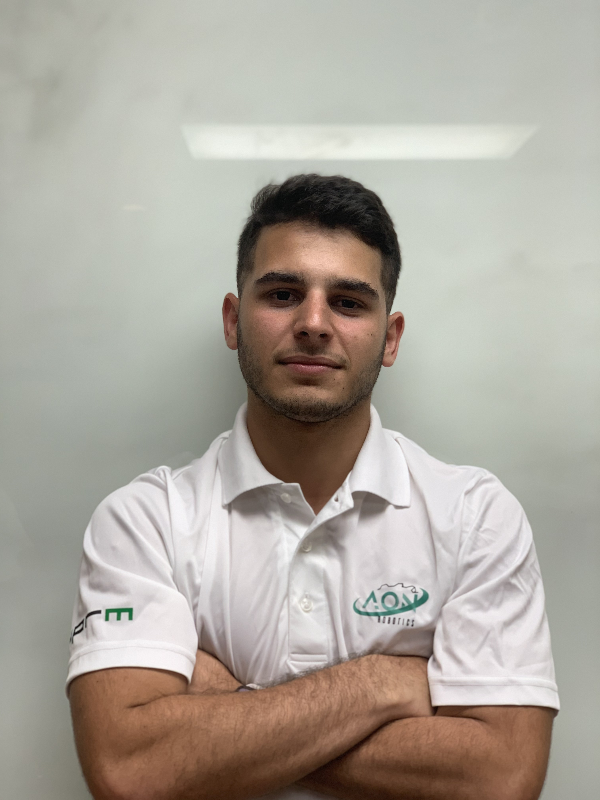

Andrea Méndez
My professional goals are to explore multiple areas of engineering. I joined the AON Robotics team because I wanted to pursue my interest in robotics and AON-R is the best team to do so.
Javier De Jesús
My professional goals are to obtain a master’s degree in biomedical engineering. More specifically, I want to work in the biomechanics field with the goal of increasing accessibility for quality healthcare.
Enrique Báez
My main goals are to create innovative and helpful machines for big tech companies that specialize in either aerospace or robotics. Another long-term goal is to someday have a company of my own. I joined the team
because I realized the potential and commitment AON-R has for the competition, their members, and the skills they learn along the way. In all, there’s no better team for me to be a part of.

Samuel García
My professional goals are to have a career where I can develop technological equipment that aids in the exploration of space. I joined AON-R to step outside the realms of conceptualization and design something that
comes to life.
Raymond Crespo
After I complete my bachelor’s degree, I aspire to continue my studies in mechanical engineering. It is my hope that I can put my professional skills to use in my homeland of Puerto Rico and contribute to its economic
growth.
Miguel Fernández
My goals are to be able to fulfill any task and to design solutions to problems related to mechanical engineering. Also, I want to obtain a position in a company or develop a proposal for current scientific problems
to conduct research.
César Lasalde
After I graduate, I plan to apply to graduate school and obtain a Ph.D. in Environmental Engineering. More specifically, I want to do research to fight climate change and the environmental crisis our planet has.
After graduate school, I plan on returning to Puerto Rico and work as a scientist, applying my knowledge as an engineer to help our island and the planet.
Kevin Figueroa

José Lasalde